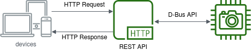

Control of the Chronos camera is provided as a REST API, which is a type of web API, involving requests and responses, not too unlike visiting a web page. You make a request to a resource stored stored on a server, and the server responds with the requested information. The protocol used to transport the data is HTTP. "REST" stands for Representational State Transfer.
The Chronos API provides access to the camera configuration, settings and related data
describing the camera's hardware and available features. The base address of the Chronos
API is http://192.168.12.1/control when accessing the camera via its USB
interface. This API provides a set of endpoints, each with its own unique path.
API methods are procedures that may start a procedure, or change the camera state. Since these operations do not fit well into the REST model, they are performed using the HTTP POST method, with their arguments provided in JSON format as the HTTP POST body.
The describe method is accessible by the /control/describe
endpoint, and returns a description of the available parameters and methods that can be
accessed via the Chronos API. This method is used to generate most of the reference
information on this page.
user@example.com:~$ curl http://192.168.12.1/control/describe
{
"cameraMemoryGB": {
"type": "d",
"get": true,
"set": false,
"notifies": false,
"doc": "int: Amount of video memory attached to the FPGA in GiB"
}
...
}
| Member | Description |
|---|---|
type | D-Bus type signature for the parameter's value. |
get | true when the parameter can be retrieved using the get method |
set | true when the parameter can be changed using the set method |
notifies | true when changes to the parameter are reported using the notify event |
doc | User documentation string, explaining the parameter's meaning and function |
With server-sent-events it is possible for the camera to send asynchronous notifications when long running operations complete, or parameters change in the API. This is done by pushing events to the web browser.
Using Javascript, a browser can subscribe to the HTML5 Server-Sent-Events stream by
creating a new EventSource on the /control/subscribe endpoint,
and then using the addEventListener function to receive events.
function onNotifyEvent(data) {
document.getElementById("result").innerText = JSON.parse(data);
}
var evtSource = new EventSource("/control/subscribe");
evtSource.addEventListener("notify", function(event) {onNotifyEvent(event.data);});
The notify event is generated whenever a mutable parameter in the API
changes its value, and the data sent with the event will contain a dictionary of the
updated parameter values.
user@example.com:~$ curl http://192.168.12.1/control/subscribe
event: notify
data:{
data: "calSuggested": false,
data: "state": "analogcal"
data:}
The complete event is generated whenever an asynchronous procedure has run
to completion, and will contain the results of the procedure. If the procedure completed
successfully then the data will contain a dictionary with the name of the method the
completed, and the new state of the camera. If the procedure completed with an error, then
the dictionary will also contain an error with the type of error that occured,
and optionally a message with a human-readable description of the error.
user@example.com:~$ curl http://192.168.12.1/control/subscribe
event: complete
data:{
data: "state": "idle",
data: "method": "startWhiteBalance",
data: "error": "SignalClippingError",
data: "message": "Signal clipping, reference image is too bright for white balance"
data:}
| Member | Description |
|---|---|
state | The new state of the camera after completing the asynchronous call |
method | The name of the asynchronous API call that has completed |
error | A canonical name for an error that occured during the asynchronus call (optional) |
message | A human-readable string describing the cause of the error |
The Chronos API exposese a set of parameters that are accessible using a REST API. Parameters are accessed via standard HTTP requests in JSON format, and where possible the Chronos API uses appropriate verbs for each action:
| Verb | Endpoint | Action |
|---|---|---|
| GET | /control/p/{name} |
Retrieve a single parameter by name |
| PUT | /control/p/{name} |
Set the value of a single parameter by name |
| POST | /control/p |
Update a collection parameters together |
| Name | Type | Description | Value |
|---|